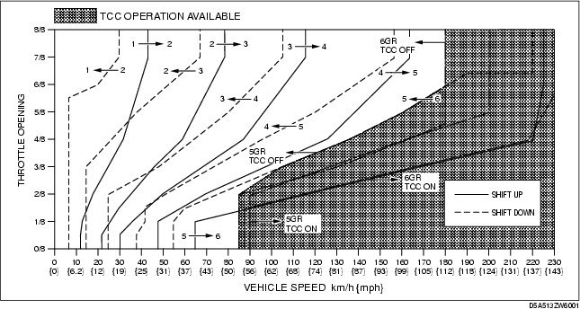

Workshop Manual ➭ TRANSMISSION/TRANSAXLE ➭ AUTOMATIC TRANSMISSION[SJ6A-EL] ➭ ROAD TEST [SJ6A-EL]
ROAD TEST [SJ6A-EL]
id051311248900
• When performing a road test, be aware of other vehicles, people, impediments to avoid an accident.
• When the legal speed limit must be exceeded, use a chassis dynamometer instead of performing a road test.
Road Test Preparation
-
Inspect the engine coolant level. (See ENGINE COOLANT LEVEL INSPECTION [L8, LF].)
-
Inspect the engine oil level. (See ENGINE OIL LEVEL INSPECTION [L8, LF].)
-
Inspect the ATF level. (See AUTOMATIC TRANSMISSION FLUID (ATF) LEVEL ADJUSTMENT [SJ6A-EL].)
-
Inspect the idle speed. (See Idle Speed Inspection.)
-
Inspect the ignition timing. (See Ignition Timing Inspection.)
-
Wait until the engine and transmission reach normal operating temperature.
Shift Diagram
D range (normal mode)

D Range Test
-
Perform road test preparation. (See Road Test Preparation.)
-
Verify that 1→2, 2→3, 3→4, 4→5, and 5→6 upshifts can be obtained. The shift points must be as shown in the table below.
• If there is any malfunction, inspect the TCM and AT. (See SYMPTOM TROUBLESHOOTING ITEM TABLE [SJ6A-EL].)
- Drive the vehicle in 6GR, 5GR, 4GR, 3GR, 2GR and verify that kickdown occurs for 6→5, 5→4, 4→3, 3→2, and 2→1 downshifts, and that the shift points are as shown in the table below.
• If there is any malfunction, inspect the TCM and AT. (See SYMPTOM TROUBLESHOOTING ITEM TABLE [SJ6A-EL].)
• If there is any malfunction, inspect the TCM and AT. (See SYMPTOM TROUBLESHOOTING ITEM TABLE [SJ6A-EL].)
- Drive the vehicle and verify that TCC operation is obtained. The operation points must be as shown in the table below.
• If there is any malfunction, inspect the TCM and AT. (See SYMPTOM TROUBLESHOOTING ITEM TABLE [SJ6A-EL].)
Shift point table
M Range Test
-
Perform road test preparation. (See Road Test Preparation.)
-
Verify that 1→2, 2→3, 3→4, 4→5, and 5→6 upshifts and 6→5, 5→4, 4→3, 3→2, and 2→1 downshifts are obtained by manual shifting.
• If there is any malfunction, inspect the TCM and AT. (See SYMPTOM TROUBLESHOOTING ITEM TABLE [SJ6A-EL].)
- Decelerate the vehicle and verify that 6→5, 5→4, 4→3, 3→2, and 2→1 downshifts are obtained. The shift points must be as shown in the table below.
• If there is any malfunction, inspect the TCM and AT. (See SYMPTOM TROUBLESHOOTING ITEM TABLE [SJ6A-EL].)
• If there is any malfunction, inspect the TCM and AT. (See SYMPTOM TROUBLESHOOTING ITEM TABLE [SJ6A-EL].)
- Drive the vehicle and verify that TCC operation is obtained in 5GR and 6GR. The operation points must be as shown in the table below.
• If there is any malfunction, inspect the TCM and AT. (See SYMPTOM TROUBLESHOOTING ITEM TABLE [SJ6A-EL].)
Vehicle speed at shift point table
P Position Test
- Shift into the P position on a gentle slope. Release the brake, and verify that the vehicle does not roll.
• If there is any malfunction, inspect the AT. (See SYMPTOM TROUBLESHOOTING ITEM TABLE [SJ6A-EL].)